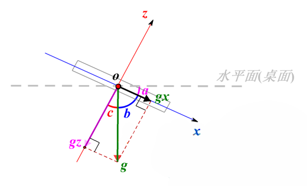

9. 加速度¶
加速度传感器能够测量由于重力引起的加速度，传感器在加速过程中，通过对质量块所受惯性力的测量，利用牛顿第二定律获得加速度值。掌控板上的加速度计可测量加速度，测量范围为 -2g 到 +2g 之间。
掌控板的测量沿3个轴，每个轴的测量值是正数或负数，正轴越趋近重力加速度方向，其数值往正数方向增加，反之往负数方向减小，当读数为 0 时，表示沿着该特定轴“水平”放置。
- X - 向前和向后倾斜。
- Y - 向左和向右倾斜。
- Z - 上下翻转。
例：通过OLED显示屏来观察3个轴加速度值的变化
from mpython import *
while True:
oled.fill(0)
x1 = accelerometer.get_x()
y1 = accelerometer.get_y()
z1 = accelerometer.get_z()
oled.DispChar("加速度x:", 0, 0)
oled.DispChar(str(x1), 48, 0)
oled.DispChar("加速度y:", 0, 16)
oled.DispChar(str(y1), 48, 16)
oled.DispChar("加速度z:", 0, 32)
oled.DispChar(str(z1), 48, 32)
oled.show()
使用前，导入mpython模块:
from mpython import *
获取X、Y、Z三轴的加速度:
x1 = accelerometer.get_x()
y1 = accelerometer.get_y()
z1 = accelerometer.get_z()
注解
通过 accelerometer.get_x() 获取3轴加速度。获取3轴加速度获取方法分别为 get_x() 、get_y() 、get_z() 。
每个轴的测量值根据方向是正数或负数，表示以克为单位的值。
您可以尝试掌控板按以下放置，观察3轴数据:
- 平放桌面 –(0,0,-1)
- 翻转平放桌面 –(0,0,1)
- 掌控板下板边直立与桌面 –(1,0,0)
- 掌控板左板边直立与桌面 –(0,1,0)
注解
发现什么规律没有？当重力加速度与加速度轴方向一致时，即等于1g的地球重力加速度。正方向为+1g，反方向为-1g。 假如您猛烈地摇动掌控板，您会看到加速度达到±2g，那是因为这个加速度计的最大测量值为±2g。
9.1. 水平球¶
1 2 3 4 5 6 7 8 9 10 11 12 13 14 15 16 17 18 19 20 21 22 23 24 25 26 27 28 29 | from mpython import * #导入mpython模块
Center_x=63 #设定中心点（原点）x的坐标
Center_y=31 #设定中心点（原点）y的坐标
while True:
x=accelerometer.get_x() #获取X轴的加速度
y=accelerometer.get_y() #获取Y轴的加速度
if y<=1 and y>=-1:
offsetX=int(numberMap(y,1,-1,-64,64)) #映射Y轴偏移值
if x<=1 and x>=-1:
offsetY=int(numberMap(x,1,-1,32,-32)) #映射X轴偏移值
move_x=Center_x+offsetX #水平球在X坐标上的移动
move_y=Center_y+offsetY #水平球在Y坐标上的移动
oled.circle(Center_x,Center_y,6,1) #画中心固定圆：空心
oled.fill_circle(move_x,move_y,4,1) #画移动的水平球：实心
oled.DispChar("%0.1f,%0.1f" %(x,y),85,0) #显示水平球在X、Y轴的加速度值
if offsetX==0 and offsetY==0:
rgb.fill((0,10,0)) #水平球在中心位置亮绿灯，亮度为10
rgb.write()
else:
rgb.fill((0,0,0)) #水平球不在中心位置灭灯
rgb.write()
oled.show()
oled.fill(0)
|
{kind=link}
当检测到掌控板在X轴和Y轴方向倾斜时（范围-1g 至+1g），将X轴、Y轴的偏移值也就是加速度值（范围-1至1）分别映射在以设定的中心点为原点的X坐标上的Y坐标（范围32至-32）、X坐标（范围-64至64）上:
if y<=1 and y>=-1:
offsetX=int(numberMap(y,1,-1,-64,64))
if x<=1 and x>=-1:
offsetY=int(numberMap(x,1,-1,32,-32))
注解
numberMap(inputNum, bMin, bMax, cMin, cMax) 是映射函数，inputNum 为需要映射的变量，bMin 为需要映射的最小值，bMax 为需要映射的最大值，cMin 为映射的最小值，cMax 为映射的最大值。
水平球在X、Y坐标上的移动：水平球在坐标上的移动 = 中心点位置 + 加速度的偏移值:
move_x=Center_x+offsetX
move_y=Center_y+offsetY
如果水平球移动到中心位置，则亮绿灯，否则不亮灯:
if offsetX==0 and offsetY==0:
rgb.fill((0,10,0)) #水平球在中心位置亮绿灯，亮度为10
rgb.write()
else:
rgb.fill((0,0,0)) #水平球不在中心位置灭灯
rgb.write()
9.2. 计算掌控板倾斜的角度¶
1 2 3 4 5 6 7 8 9 10 11 12 13 14 15 | # 通过y轴加速度求y轴与水平面倾斜角度
from mpython import*
from math import acos,degrees
while True:
y=accelerometer.get_y()
if y<=1 and y>=-1:
rad_y=acos(y)
deg_y=90-degrees(rad_y)
oled.DispChar('%.2f°' %deg_y,50,25)
oled.show()
oled.fill(0)
|
使用前，导入mpython模块和math模块中acos函数、degrees函数:
from mpython import *
from math import acos,degrees
获取X轴的加速度:
x = accelerometer.get_x()
假设掌控板参考水平面为桌面，掌控板倾斜过程中，Y轴与桌面是平行，其夹角不变（一直是0度），发生变化的是X轴与桌面的夹角以及Z轴与桌面的夹角，而且桌面与X轴Z轴夹角变化度数是一样的。为了方便分析，我们从Y轴的方向俯看下去，那么这个问题就会简化成只有X轴和Z轴的二维关系。假设某一时刻掌控板处于如下状态：
在这个图中，Y轴已经简化和坐标系的原点O重合在了一起。我们来看看如何计算出掌控板的倾斜角，也就是与桌面的夹角a。g是重力加速度，gx、gz分别是g在X轴和Z轴的分量。
根据反余弦定理，计算角b的弧度值:
rad_x=acos(x)
计算夹角的角度，即角a=角c=90度-角b:
deg_x=90-degrees(rad_x)
注解
- acos() 函数为返回反余弦弧度值。
- degrees() 函数为将弧度转换为角度。